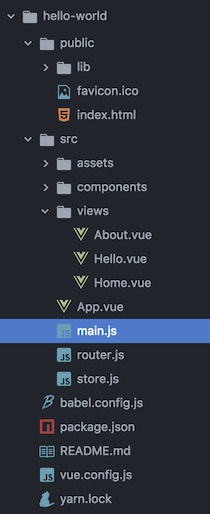

Vue-Cli 3 相比以前的版本有更多的优点: 项目结构更加清晰简洁, 运行效率更高, 打包速度更快, 包更小, 原生支持创建多页项目, 支持 yarn 进行包管理, 支持 Webpack 4 等, 生成的项目结构如下:

下面就简要的介绍下使用 Vue-Cli 3 创建单页项目的步骤:
安装 yarn, 可参考 Yarn 新手指南
yarn 安装项目依赖:
yarn add package-name [--dev/-D]yarn 升级项目依赖:
yarn upgrade package-nameyarn 安装全局依赖:
yarn global add package-name
安装 Vue-Cli 3:
yarn global add @vue/cli使用 Vue-Cli 3 创建项目:
- 启动项目管理页面:
vue ui - 选择项目所在目录，输入项目名称
- 选择需要的插件, 推荐
- Babel
- Router
- Vuex
- Css Pre-processors (推荐 SCSS)
- Linter/Formatter (推荐 Airbnb)
- 启动项目管理页面:
根据项目规范修改 eslint rules (在 package.json 文件里): 例如使用 4 个空格缩进, 代码中可以允许有多个空格进行排版, 更多的规则请自行定制:
1
2
3
4
5"rules": {
"vue/no-reserved-keys": "warning",
"indent": ["error", 4],
"no-multi-spaces": 0
}修改运行端口 (修改
vue.config.js, 在项目根目录下, 没有的话自行创建), 默认端口是 8080, 但是如果同时开发后端, 要运行 Tomcat 等, 8080 端口已经被占用, 需要修改为其他端口, 例如修改为 8888:1
2
3
4
5module.exports = {
devServer: {
port: 8888,
},
};更多配置请参考 https://cli.vuejs.org/zh/config/
运行:
yarn serve打包:
yarn build默认输出目录为项目根路径下 dist 目录, 可以修改 outputDir 进行指定:
1
2
3
4
5
6module.exports = {
devServer: {
port: 8888,
},
outputDir: '../static',
};安装 iView:
- 运行
vue ui - 搜索插件
vue-cli-plugin-iview，点击安装 - 等一会，安装完成后
main.js中自动增加了使用 iView 的语句import './plugins/iview'
- 运行
启用 gzip 压缩 (能够减少差不多 js, css 五分之三的流量)
增加 gzip 依赖:
yarn add -D compression-webpack-plugin修改 vue.config.js
1
2
3
4
5
6
7
8
9
10
11
12
13
14
15
16
17
18
19const CompressionWebpackPlugin = require('compression-webpack-plugin');
module.exports = {
devServer: {
port: 8888,
},
productionSourceMap: false, // 不生成 map 文件
configureWebpack: config => {
if (process.env.NODE_ENV === 'production') {
return {
plugins: [new CompressionWebpackPlugin({
test: /\.(js|css)(\?.*)?$/i, // 需要压缩的文件正则
threshold: 10240, // 文件大小大于这个值时启用压缩 (10K)
deleteOriginalAssets: false, // 压缩后保留原文件
})]
};
}
},
};Nginx 开启 gzip
打包分析:
yarn build --report(不需要步骤 11 的方法了)，编译后会自动打开生成的报告report.html打包分析工具 webpack-bundle-analyzer
安装: 运行
vue ui，然后搜索vue-cli-plugin-webpack-bundle-analyzer进行安装编译: 运行
yarn build，编译后会自动打开生成的报告report.html如果想编译后不自动打开生成的报告，在 vue.config.js 中添加下面的代码即可，需要的时候再去收到打开
1
2
3
4
5
6
7module.exports = {
pluginOptions: {
webpackBundleAnalyzer: {
openAnalyzer: false
}
}
};
提示: Atom 使用 atom-beautify 格式化时, 如果不是 4 个空格, 可以手动在项目根目录下创建文件 .editorconfig, 修改 indent_size = 4